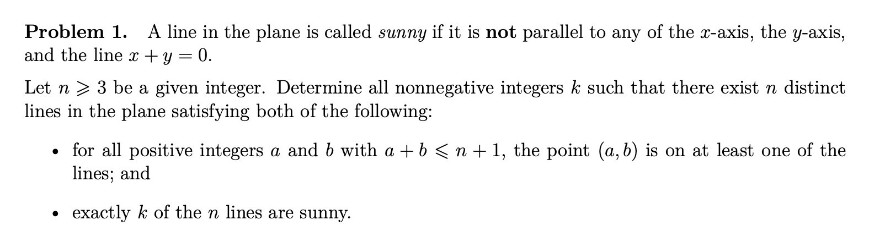
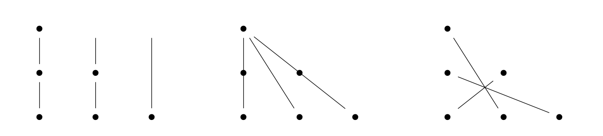
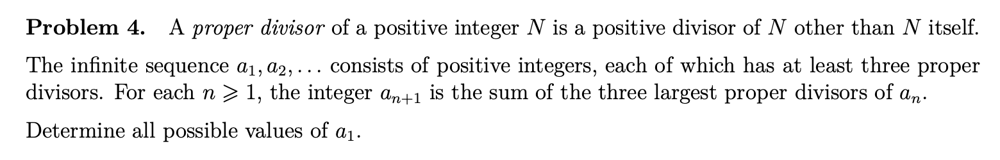
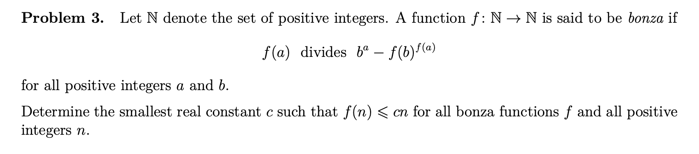

Some solutions to problems from the 2025 IMO
Table of Contents
Originally posted:
1. Introduction
Inspired by Prof. Timothy Gowers' YouTube videos, I recently attempted to solve some of the problems on the 2025 IMO. So far, I've managed to do 3/6. Problem 1 and problem 4 (usually designed to be the easiest problems on the exam) certainly required a decent amount of thought, but problem 3 (usually one of the hardest on the exam) was incredibly difficult and required me to use some theorems from basic number theory. I may decide to try some of the remaining three problems. If I do, I will update this blog post!
2. Problem 1
Here is the first problem:

and here is my solution:
Claim 2.1. Any cover \(C = \{L_1, \dots, L_n\}\) of the ``integer triangle" of \((a, b) \in \mathbb{Z}^2_{> 0}\) with \(a + b \leq n + 1\) by \(n\) lines must include a non-sunny line along one of its edges.
Proof. Suppose not. Label the edges \(E_1, E_2, E_3\). Each \(E_j\) has \(n\) points, and they share corners. If some \(L_k \in C\) passes through two points common to the same \(E_j\), then \(L_k = E_j\). Thus, each of the \(n\) points of fixed \(E_j\) are contained in unique \(L_k\). In the \(E_j\) combined, there are \(3n - 3\) points, so for \(n > 3\), we have \(3n - 3 > 2n\), which means that by the Pigeonhole principle, some \(L_k\) must contain at least three distinct points of the combined \(E_j\), and they must be from distinct \(E_j\) (as we explained). But such points cannot be colinear, so this is a contradiction. \(\blacksquare\)
Thus, if \(C\) is a covering for the integer triangle for some \(n > 3\), with \(k\) sunny lines, we can write it as \(C = \{L_1, \dots, L_{n - 1}, E_j\}\) for some \(E_j\). This \(E_j\) is not sunny. Removing this \(E_j\) and the corresponding points, we get a cover \(\{L_1, \dots, L_{n - 1}\}\) by \(n - 1\) lines of the integer triangle for the case of \(n - 1\), again with \(k\) sunny lines. Thus, we inductively reduce to the case of \(n = 3\) without changing \(k\). In this case, we can easily write down coverings with \(0\), \(1\), or \(3\) sunny lines:

and it follows that since we can reduce to these cases inductively with \(k\) invariant, these are the only possibilities for \(k\), for any \(n \geq 3\). Of course, we can produce such covering for \(k = 0, 1, 3\) for any \(n\) as well, by simply adding non-sunny lines to the images above. This completes the proof. \(\blacksquare\)
3. Problem 4
Here is the fourth problem:

and here is my solution:
Call a sequence which satisfies the necessary criteria valid.
Claim 3.1. A sequence of \(a_j\) is valid if and only if \(a_1 = 6 \cdot 12^k \cdot q\) for some \(k \geq 0\) and odd \(q\) which is not divisible by \(5\).
The action of mapping some \(n \in \mathbb{N}\) to the sum of its largest three proper divisors is exactly
\begin{equation} \label{eq:trans} n \mapsto \left( \frac{1}{m_1} + \frac{1}{m_2} + \frac{1}{m_3} \right) n = \left( \frac{m_2 m_3 + m_1 m_3 + m_1 m_2}{m_1 m_2 m_3} \right) n \end{equation}where \(m_1, m_2, m_3\) are its smallest three divisors (greater than \(1\)). Note that this map is non-decreasing in only three situations, in particular, \((m_1, m_2, m_3) = (2, 3, 4)\) gives \(n \mapsto \frac{13 n}{12}\), \((m_1, m_2, m_3) = (2, 3, 5)\) gives \(n \mapsto \frac{31 n}{30}\), and \((m_1, m_2, m_3) = (2, 3, 6)\) gives \(n \mapsto n\). The greatest-coefficient strictly decreasing mapping is given by \((m_1, m_2, m_3) = (2, 3, 7)\), where \(n \mapsto \frac{41 n}{42}\). We can characterize a valid sequence of \(a_j\) by an iterated sequence of these maps. In particular, note that if \(a_1 = 6 \cdot 12^k \cdot q\), by iterating the map of Eq. \eqref{eq:trans}, we send \(6 \cdot 12^k \cdot q\) to \(6 \cdot 13^k \cdot q\) via the map with \((m_1, m_2, m_3) = (2, 3, 4)\). Then via \((m_1, m_2, m_3) = (2, 3, 6)\), the sequence stabilizes. This proves one direction of Claim 1.
Any valid sequence must contain an infinite number of the three non-decreasing mappings, otherwise we would eventually reach a number which does not have at three distinct proper divisors. This means an infinite number of elements in the sequence must be divisible by \(2 \cdot 3 = 6\).
Claim 3.2. The map of Eq. \eqref{eq:trans} sends odd \(n\) to odd \(n\).
Proof. In this case, any valid mapping will be for \((m_1, m_2, m_3)\) none of which are even (as \(2\) does not divide \(n\)). Thus \(m_2 m_3 + m_1 m_3 + m_1 m_2\) is odd. \(\blacksquare\)
An immediate corollary of this fact is that in a valid sequence, every element must be even. If \(a_N\) were odd for some \(N\), then all \(a_j\) for \(j \geq N\) would be odd, hence not divisible by \(6\). It follows that any mapping going from \(a_{j - 1}\) to \(a_j\) in a valid sequence is of the form \((m_1, m_2, m_3) = (2, a, b)\). From here, suppose we have a mapping in a valid sequence where both \(a\) and \(b\) are odd. Then in particular, \(4\) does not divide \(a_{j - 1}\) and \(2a + 2b + ab\) is odd, while \(2ab\) is even. Hence, \(a_{j - 1}\) is mapped to something odd, which can't be true for a valid sequence. Thus, we can always assume that a mapping in a valid sequence is of the form \((2, 4, a)\) or \((2, a, 2a)\), corresponding to mappings
\begin{equation} \label{eq:trans2} n \mapsto \left( \frac{3a + 4}{4a} \right) n \ \ \ \ \text{or} \ \ \ \ n \mapsto \left( \frac{3 + a}{2a} \right) n \end{equation}where \(a\) is the smallest (greater than \(1\)) divisor of \(a_{j - 1}\) not equal to \(2\) or \(4\). Note that if \(n\) is not divisible by \(3\), then mapping under the transformations of Eq. \eqref{eq:trans2} yields something also indivisible by \(3\). Hence, for some logic as earlier (requiring an infitude of elements divisible by \(6\)), each element of a valid sequence must be divisible by \(3\). Therefore, it must be the case that \(a = 3\), and we have two mappings which are admissible in a valid sequence: \((m_1, m_2, m_3) = (2, 3, 4)\) and \((2, 3, 6)\). \newline
It follows that \(a_1\) must be a number whose lowest (greater than \(1\)) divisors are either \((2, 3, 4)\) or \((2, 3, 6)\). In the latter case, \(4\) and \(5\) do not divide \(a_1\), so \(a_1 = 6 \cdot q\) with \(q\) odd indivisible by \(5\). In the former case, \(a_1 = 12^k \cdot h\) where \(h\) is indivisible by \(12\). Iterating the \((2, 3, 4)\) -map yields \(h\), so the only choice from here is to map under the \((2, 3, 6)\) -map, meaning \((2, 3, 6)\) are the lowest divisors of \(h\), so from the other case, \(h = 6 \cdot q\), and we are done. \(\blacksquare\)
4. Problem 3
Here is the third problem:

and here is my solution:
The first thing to notice is that because \(f(a) \ | \ b^a - f(b)^{f(a)}\) for all \(a\) and \(b\), we have \(f(a) \ | \ a^a\) for all \(a\). In particular, the prime factors of \(f(a)\) are all prime factors of \(a\), and if \(a = p^n\), a prime power, then \(f(a) = p^{N}\) with \(0 \leq N \leq n a\). Suppose \(p\) is a prime factor of \(a > 1\), and suppose \(f(p) = 1\). Then we have \(f(a) \ | \ p^{a} - 1\). However, note that \(p\) \emph{does not} divide \(p^{a} - 1\), as it would then divide \(1\), so it follows that \(p\) cannot be a prime factor of \(f(a)\). In other words:
Fact 4.1. If \(p\) is a prime factor of \(a\), and \(f(p) = 1\), then \(p\) is not a prime factor of \(f(a)\).
Note that from Euler's theorem, for any \(z\) coprime to prime \(p\), we have
\begin{equation} p^n \ | \ z^{\varphi(p^{n})} - 1 = z^{p^n - p^{n - 1}} - 1 \Longrightarrow p^n \ | \ z^{p^n} - z^{p^{n - 1}} \end{equation}In fact, the last expression holds for all \(z\), as \(n \leq 2^{n - 1} \leq p^{n - 1}\) for \(n \geq 1\), so if \(z = y p\), \(p\) divides the right-hand side. Thus, by induction (and a telescoping sum), \(p \ | \ z^{p^n} - z\). In particular, \(p \ | \ b^{p^n} - b\) and \(p \ | \ f(b)^{p^n} - f(b)\) for any \(n\) and \(b\). Suppose \(f(p) \neq 1\), then \(p \ | \ f(p)\), and because \(f(p) \ | \ b^p - f(b)^{f(p)}\), we have \(p \ | \ b^{p} - f(b)^{p^M}\) where \(p^M = f(p)\). By choosing \(n\) appropriately, we arrive at:
Fact 4.2. If \(f(p) \neq 1\) for some prime \(p\), then \(p \ | \ f(b) - b\) for all \(b\).
Corollary 4.1. If \(f(a) = 1\), then \(f(p) = 1\) for any prime factor \(p\) of \(a\), as if \(f(p) \neq 1\), we would have \(p \ | \ a - 1\), which can't be. If \(p\) is a prime factor of \(a\) and \(f(p) \neq 1\), then \(p \ | \ f(a)\) (\(p\) is a prime factor of \(f(a)\)). Combining with Fact 1: a prime factor \(p\) of \(a\) is a prime factor of \(f(a)\) if and only if \(f(p) \neq 1\).
Claim 4.1. There exist arbitrarily large primes \(p\) such that \(3\) does not divide \(p - 1\).
Proof. From Dirichlet's theorem on arithmetic progression, there are an infinite number of primes of the form \(p = 3n + 2\). Of course, \(p - 1 = 3n + 1\) is not divisible by \(3\), for any \(n\). \(\blacksquare\)
Now, \(f\) is chosen such that there is some \(b\) with \(f(b) - b \neq 0\). Then any of the primes \(p\) which are not prime factors of \(f(b) - b\) will satisfy \(f(p) = 1\). By Claim 1, we can choose \(p\) large enough that it doesn't divide \(f(b) - b\), \emph{and} such that \(3\) does not divide \(p - 1\). Note that if \(f(p) = 1\) for some prime, then for any other prime \(q\) with \(f(q) \neq 1\), we have \(q \ | \ p^q - 1\), and since \(q \ | \ p^q - p\) as well (from Euler's theorem), \(q \ | \ p - 1\). Therefore, we must have \(f(3) = 1\), by our choice of \(p\).
So, it follows that if \(f(p) \neq 1\) for some prime \(p\), then \(p \ | \ 2\) (Fact 4.2 with \(b = 3\)), so we must have \(p = 2\). In particular, \(f = 1\) on all primes except \(2\). It then follows that \(f(2^k a) = 2^N\) for some \(N\), for every \(2^k a\), by Corollary 4.1.
From here, we must have \(f(2^k a) = 2^N\) dividing \(3^{2^k a} - 1\) for all \(2^k a\), where \(a\) is odd. Note that
\begin{equation} 3^{2^k a} - 1 = (3^{2^{k - 1} a} - 1)(3^{2^{k - 1} a} + 1) = (9^{a} - 1)(3^{2a} + 1) \cdots (3^{2^{k - 2} a} + 1) (3^{2^{k - 1} a} + 1) \end{equation}Note that \(3^{2^j a} + 1 = 2 \ \text{mod} \ 4\), so each of these factors contributes a single \(2\) in the prime factorization. In addition, \(9^a - 1 = (2^3 + 1)^a - 1 = 2^3 o\), where \(o\) is odd (remember \(a\) is odd), so this term contributes three twos. Thus, we have a total of \(k + 2\) twos in the prime factorization. Thus, \(N \leq k + 2\). In particular, \(f(a) \leq 4 a\) for all \(a\). Thus, \(c \leq 4\).
To prove that \(4\) is optimal, so \(c = 4\), we try to produce bonza \(f\) such that \(f(4) = 16\). Suppose we let \(f(2^k a) = 1\) when \(k = 0\), \(2\) when \(k = 1\), and \(2^{k + 2}\) when \(k \geq 2\). We need to show that \(f(2^k a) \ | \ (2^j b)^{2^k a} - f(2^j b)^{f(2^k a)}\). There is nothing to prove when \(j = 0\) or \(k = 0\). If \(k = 1\) and \(j \geq 1\), the claim holds. If \(k = 2\), we have \(f(2^k a) = 2^{k + 2}\). We also have \(2^{2^k a}\) dividing the right-hand side. Note that \(k + 2 \leq 2^k a\) for \(k \geq 2\), so we have proved that \(f\) is bonza and saturates the bound. \(\blacksquare\)